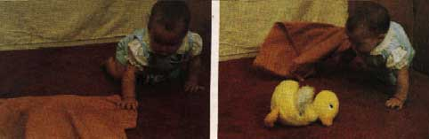

Piaget (1954, 1964) described this stage from birth to approximately 2 years as a period of rapid cognitive growth.
Piaget's method for discovering the characteristics and features of this stage was to observe this own children and report their behavior at different ages.
Initially equipped with a set of reflex movements and a set of perceptual systems, an infant quickly begins to build up direct knowledge of world around her, by relating physical actions to perceived results of those actions. Through the processes of assimilation and accommodation, these actions become progressively adapted to the world (e.g. grasping schema).
During the sensorimotor stage infants learn mostly through trial and error learning. Children initially rely on reflexes, eventually modifying them to adapt to their world. Behaviors become goal directed, progressing from concrete to abstract goals. Objects and events can be mentally represented by the child (sometimes called object permanence).
Infancy is characterized by extreme egocentrism, where the child has no understanding of the world other than her own current point of view. The main development during this stage is the understanding that objects exist and events occur in the world independently of one's own actions ('the object concept', or 'object permanence').
Object permanence means knowing that an object still exists, even if it is hidden. It requires the ability to form a mental representation (i.e. a schema) of the object.
For example, if you place a toy under a blanket, the child who has achieved object permanence knows it is there and can actively seek it. At the beginning of this stage the child behaves as if the toy had simply disappeared. The attainment of object permanence generally signals the transition to the next stage of development (preoperational).

Object Permanence Experiment
Blanket and Ball Study
Aim: Piaget (1963) wanted to investigate at what age children acquire object permanence.
Method: Piaget hid a toy under a blanket, while the child was watching, and observed whether or not the child searched for the hidden toy. Searching for the hidden toy was evidence of object permanence. Piaget assumed that the child could only search for a hidden toy if s/he had a mental representation of it.
Results: Piaget found that infants searched for the hidden toy when they were around 8-months-old.
Conclusion: Children around 8 months have object permanence because they are able to form a mental representation of the object in their minds.
Evaluation
Piaget assumed the results of his study occur because the children under 8 months did not understand that the object still existed underneath the blanket (and therefore did not reach for it). However, there are alternative reasons why a child may not search for an object:
The child could become distracted or loose interest in the object and therefore the lack motivation to search for it, or simply may not have the physical coordination to carry out the motor movements necessary for the retrieval of the object.
There is also evidence that object permanence occurs earlier than Piaget claimed. Bower and Wishart (1972) used a lab experiment to study infants aged between 1 – 4 months old.
Instead of using a Piaget’s blanket technique they waited for the infant to reach for an object, and then turned out the lights so that the object was no longer visible. They then filmed the infant using an infra red camera. They found that the infant continued to reach for the object for up to 90 seconds after it became invisible.
Again, just like Piaget's study there are also criticisms of Bower's 'reaching in the dark' findings. Each child had up to 3 minutes to the complete the task and reach for the object. Within this time period it is plausible they may have successfully completed the task by accident. For example randomly reaching out and finding the object or even reaching out due to the distress of the lights going out (rather than reaching out with the intention of searching for an object.